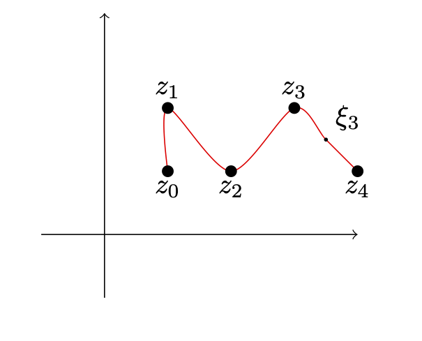

2.1. Intégrale curviligne#
\(\newcommand{\R}{\mathbb{R}}\) \(\newcommand{\Q}{\mathbb{Q}}\) \(\newcommand{\N}{\mathbb{N}}\) \(\newcommand{\C}{\mathbb{C}}\) \(\newcommand{\Z}{\mathbb{Z}}\)
2.1.1. Définition et généralités#
Definition 2.1
On appelle chemin de \(\C\) l’image d’une application continue \(\gamma : [a, b] \to \C\), \([a, b]\) étant un intervalle de \(\R\), muni d’un sens de parcours.
On appelle lacet un chemin tel que \(\gamma(a)=\gamma(b)\).
On dit qu’une application \(\gamma : [a,b]\to \C\) est \(C^1\) par morceaux s’il existe \(a=t_1<t_2...<t_n=b\) tel que \(\gamma\) soit de classe \(C^1\) sur les intervals de la forme \([t_i,t_{i+1}]\).
Si pour un chemin, on peut trouver \(\gamma\) qui soit \(C^1\) par morceaux, on dira que le chemin est \(C^1\) par morceaux.
Fig. 2.1 Un chemin \(C^1\) par morceaux#
Fig. 2.2 Un lacet \(C^1\) par morceaux#
Example 2.1 (Exemple de chemin et leur paramétrisation :)
Segment de droite parallèle à l’axe des abscisses,
Segment de droite parallèle à l’axe des ordonnées,
Segment de droite passant par l’origine,
Arc de cercle de rayon \(R_0\) et de centre \(a\),
Definition 2.2
Soit \(\gamma([a,b])\) un chemin \(C^1\) par morceaux paramétré par \(\gamma\), et \(a=t_1<...<t_n=b\) la décomposition associée. Soit \(f\) une fonction de la variable complexe continue, on appelle intégrale curviligne de \(f\) le long de \(\gamma\) la valeur
également noté
Proposition 2.1 (Reformulation (Intégrale de Stieltjes))
Soit \(\gamma([a,b])\) un chemin \(C^1\) par morceaux paramétré par \(\gamma\) et \(f\) une fonction continue. Alors l’intégrale curviligne de f sur le chemin défini par gamma peut s’écrire comme limite
On a donc une reformulation. On se donne une subdivision du chemin \(\gamma([a,b])=\cup_{k=1}^n \hat{z_{k-1}z_k}\) et un point dans chaque morceau \(\xi_k\in\hat{z_{k-1}z_k}\), comme dans le graphique qui suit.
{kind=link}
Avec les notations
on peut réecrire
Proposition 2.2 (propriétés de l’intégrale curviligne)
(Linéarité) Soient \(\gamma\) un chemmin, \(f,g\) deux fonctions continues et \(\lambda,\mu \in \C\) deux scalaires. Alors
(Intégrale d’une constante) Si \(\gamma\) est une paramètrisation d’un chemin et \(K\) est une constante, alors
(Sens de parcours) Si \(\gamma_+\) est un chemin parcouru dans un sens et \(\gamma_-\) le même chemin parcouru dans l’autre sens, alors pour \(f\) une fonction continue,
(Juxtaposition de deux chemins) Soient \(\gamma_1 : [a,b]\to \C\) et \(\gamma_2 : [b,c] \to \C\) deux chemins tels que \(\gamma_1(b)=\gamma_2(b)\), et on note \(\gamma_1\cup\gamma_2\) le chemin obtenue en juxtaposant ces deux chemins. On a alors que
Proof. Il s’agit à chaque fois de revenir à la définition.
La première propriété repose sur la linéarité du produit, la deuxième sur le théorème fondamental de l’analyse (aussi connue sous l’intégrale d’une dérivée), la troisième sur le fait qu’inverser un sens de parcours inverse la dérivé de la paramètrisation et enfin la quatrième sur la relation de Chasles.
Example 2.2 (Exemple de calcul :)
Notons \(\mathbb{U}:=\{z\in \C, |z|=1\}\) et calculons \(\int_{\mathbb{U}}\frac{1}{z}dz\).
Remarquons d’abord que \(\theta\in [0,2\pi]\mapsto e^{i\theta}\) est une paramétrisation \(C^1\) de \(\mathbb{U}\). Donc
2.1.2. Lemmes de Jordan#
Lemma 2.1 (\(1^{er}\) lemme de Jordan)
Soient \(a\in \C\) un point, \(r>0\) un rayon et \(f\) une fonction continue.
Alors si l’on considère comme chemin \(C_r(a)\) un arc du cercle centré en \(a\) et de rayon \(r\), et si \mbox{\(\lim\limits_{r\to 0 (resp +\infty)}\sup\limits_{C_r(a)}|(z-a)f(z)|=0\)}, alors
Proof. Paramétrisons l’arc de cercle par \(\gamma : \theta\in [\alpha,\beta] \mapsto a+re^{i\theta}\). Alors
Ce qui montre par encadrement la limite énoncé.
Lemma 2.2 (\(2^{nd}\) lemme de Jordan)
{kind=link}
{kind=link}
Soient \(a\in \C\) un point, \(r>0\) un rayon et \(f\) une fonction continue.
Supposons \(\lim\limits_{r\to +\infty}\sup\limits_{C_r(a)}|f(z)|=0\), alors
Proof. Quitte à effectuer une translation de l’espace, on peut supposer sans perte de généralité que \(a=0\).
Calculons, pour \(0\leq \alpha<\beta\leq \pi\) (cas \(C_r\subset C_r^+\)) et \(m>0\) :
Car \(|e^{z}|=e^{Re(z)}),\)
Car \(\sin(\theta)\geq\frac{2\theta}{\pi}\) sur \([0,\frac{\pi}{2}]\),
Pour les trois autres cas, on peut soit refaire tout les calculs, soit se ramener à chaque fois par un changement de variable à la troisième ligne de ce calcul (les détails sont laissé au lecteur).